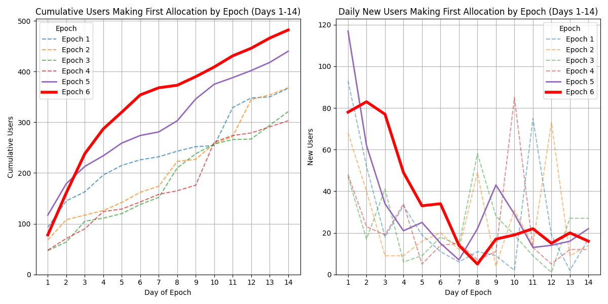

{% capture content %}
{% include e6/content/text_1.1.md %}
{% endcapture %}
{{ content | markdownify }}
Comprehensive analysis of Epoch 6 performance metrics and user behavior


Note: patron mode not included.